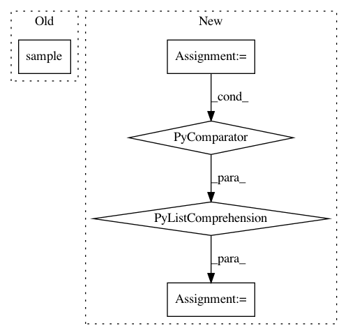

da94c5e70d32738cc17575265c1445904b4b752e,tests/test_dirichlet_distributions.py,TestDirichletDistributions,test_point_to_pdf,#TestDirichletDistributions#,52
Before Change
points = self.dirichlet.random_uniform(self.n_samples)
pdfs = self.dirichlet.point_to_pdf(points)
alpha = gs.ones(self.dim)
random_point_in_simplex = self.dirichlet.sample(alpha)
pdfs_at_point = pdfs(random_point_in_simplex)
self.assertAllClose(gs.shape(pdfs_at_point), (self.n_samples))
@geomstats.tests.np_and_pytorch_only
After Change
alpha = gs.ones(self.dim)
samples = self.dirichlet.sample(alpha, self.n_samples)
result = pdfs(samples)
pdf1 = [dirichlet.pdf(x, points[0, :]) for x in samples]
pdf2 = [dirichlet.pdf(x, points[1, :]) for x in samples]
expected = gs.stack([gs.array(pdf1), gs.array(pdf2)], axis=0)
self.assertAllClose(result, expected)
@geomstats.tests.np_and_pytorch_only
def test_metric_matrix_vectorization(self):
In pattern: SUPERPATTERN
Frequency: 3
Non-data size: 5
Instances
Project Name: geomstats/geomstats
Commit Name: da94c5e70d32738cc17575265c1445904b4b752e
Time: 2020-11-20
Author: alice.le-brigant@enac.fr
File Name: tests/test_dirichlet_distributions.py
Class Name: TestDirichletDistributions
Method Name: test_point_to_pdf
Project Name: WZBSocialScienceCenter/tmtoolkit
Commit Name: 07c4e7ef4c6b87ed19267ca75bc5846c6dbbbc8b
Time: 2017-10-09
Author: markus.konrad@wzb.eu
File Name: tests/test_preprocess.py
Class Name:
Method Name:
Project Name: WZBSocialScienceCenter/tmtoolkit
Commit Name: cd808230100822748333f45a835c798564e853b2
Time: 2017-07-19
Author: markus.konrad@wzb.eu
File Name: tests/test_preprocess.py
Class Name:
Method Name: